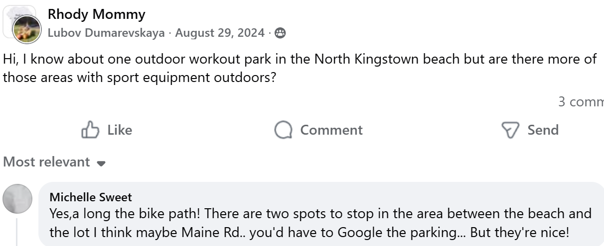

Side project · geospatial data · community research
Building a verified recreation map for Rhode Island families
A self-initiated project to turn scattered parent and community recommendations into verified GeoJSON datasets and interactive maps.
Luba
Take-home presentation
Upstream Carbon
Use ↑/↓ or scroll to move through slides
Problem & motivation
Simple outing questions were surprisingly hard to answer.
The recurring questions
- Where are nearby splash pads?
- Which outdoor gyms actually exist and are usable?
- Which places are worth a short drive?
- Can I plan visually instead of rereading old threads?
The data problem
- Recommendations were scattered across Facebook groups.
- Location names and addresses were inconsistent.
- Some public or municipal references were incomplete.
- There was no simple map-first view for decision-making.
Motivation: I enjoy turning messy, local, real-world information into something structured,
trustworthy, and easy to act on.
Approach
I treated the project like a small data product.
1. SurveyFind candidate locations from community recommendations.
2. ExtractCapture names, approximate places, and repeated mentions.
3. VerifyCheck addresses and exact locations using Google Maps and public references.
4. NormalizeResolve duplicates and standardize fields for mapping.
5. PublishSave as GeoJSON and render as interactive maps.
”
How data was collected
Manual community-source research, then verification.
Representative workflow
- Monitored parent and community Facebook groups for recommendations.
- Captured repeated mentions and candidate locations.
- Cross-checked names and addresses with Google Maps.
- Validated exact coordinates and removed duplicates.
- Structured final results into reusable GeoJSON datasets.
Example data collection screenshot

Place your screenshot in the same folder as this HTML file and name it:
data_collection_screenshot.png
Use an anonymized screenshot if it contains names, profile pictures, or private Facebook content.
data_collection_screenshot.png
Use an anonymized screenshot if it contains names, profile pictures, or private Facebook content.
The hard part was not mapping — it was converting informal community knowledge into verified, structured location data.
Solution implemented
A reusable geospatial dataset and interactive map.
What I built
- Two verified GeoJSON datasets.
- Map-ready point locations.
- Popups with names, towns, and addresses.
- Separate map views for splash pads and outdoor gyms.
Why it worked
- Reduced repeated search friction.
- Made geography visible immediately.
- Turned informal community knowledge into structured data.
- Created a simple artifact that can be improved over time.
The core insight: everyday planning gets much easier once scattered information is verified, normalized, and mapped.
Live artifact
Interactive maps built from verified GeoJSON datasets.
These maps load directly from the public GeoJSON files and show the final usable output.
Outdoor Gyms
outdoor gymsSplash Pads
splash padsAction & reflection
The result was useful, but the bigger takeaway was how I like to work.
Action taken
- Used the map for real family recreation planning.
- Created a reusable public artifact instead of a private one-off list.
- Kept the data maintainable and extensible through GeoJSON.
What this shows about me
- I notice friction in everyday systems.
- I am comfortable working with incomplete, messy data.
- I like geospatial problems because they connect data to real-world decisions.
- I enjoy building practical tools without waiting for permission.
Why this connects to Upstream Carbon: I am motivated by turning fragmented real-world information
into something structured, trustworthy, and actionable.